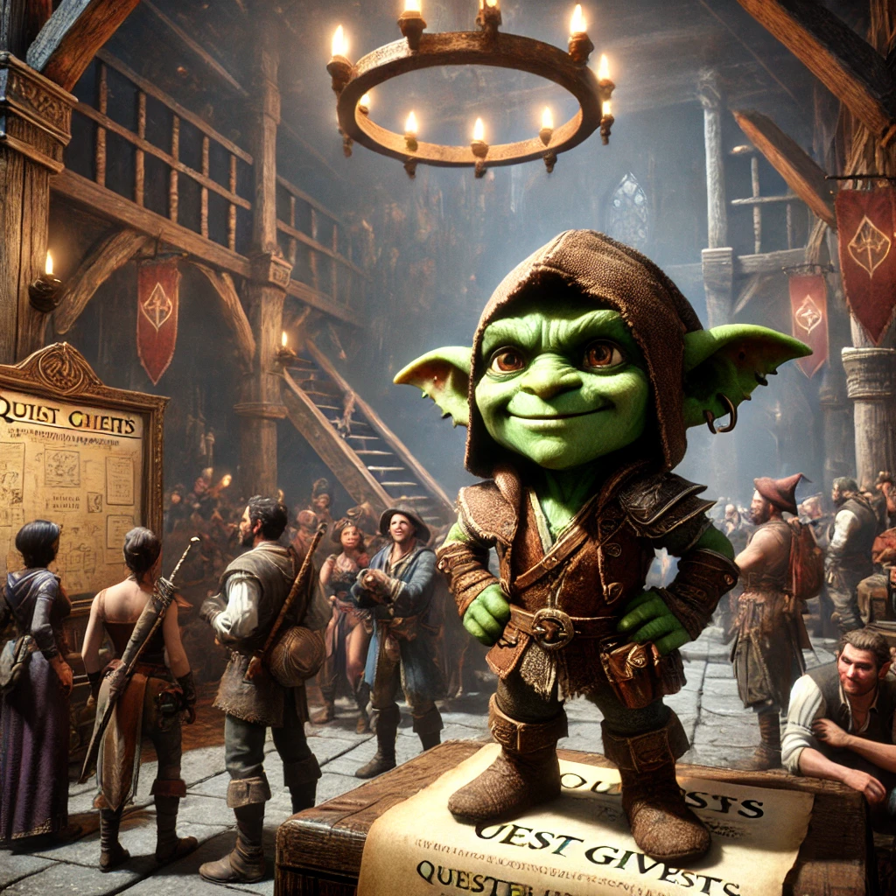
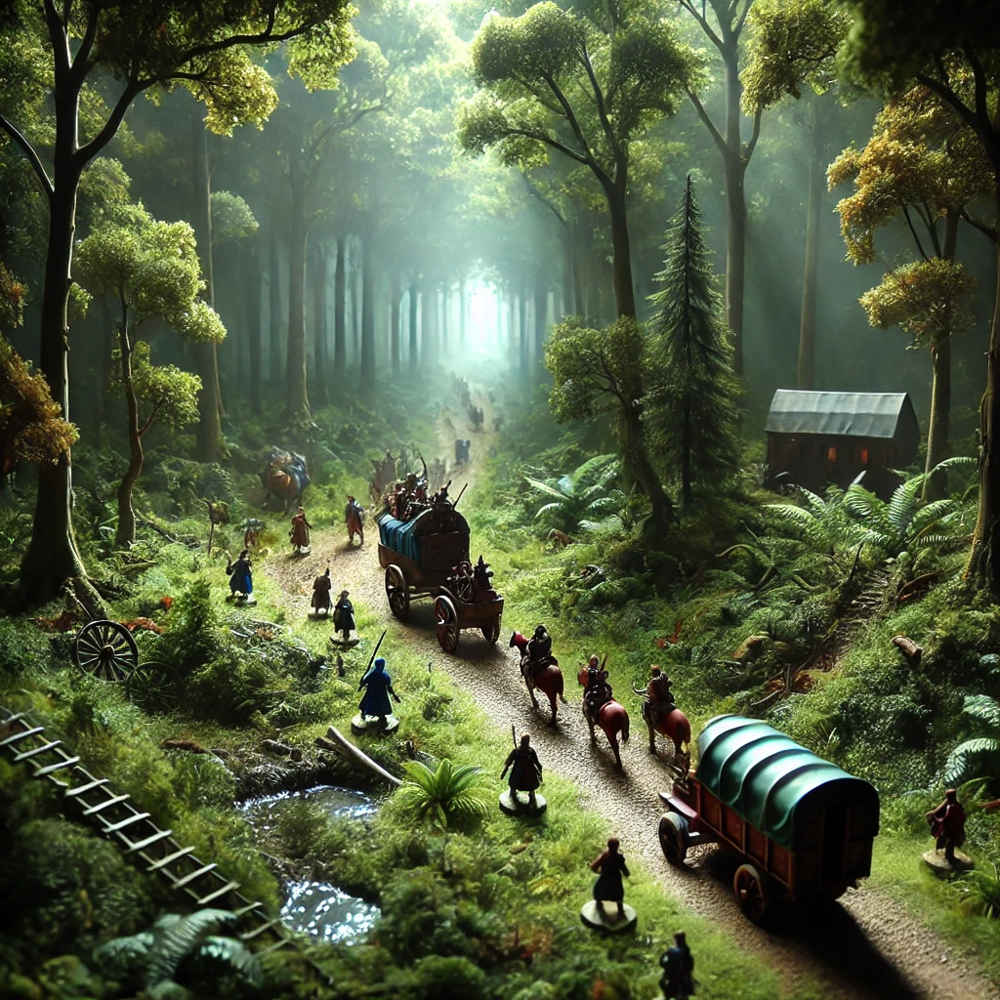
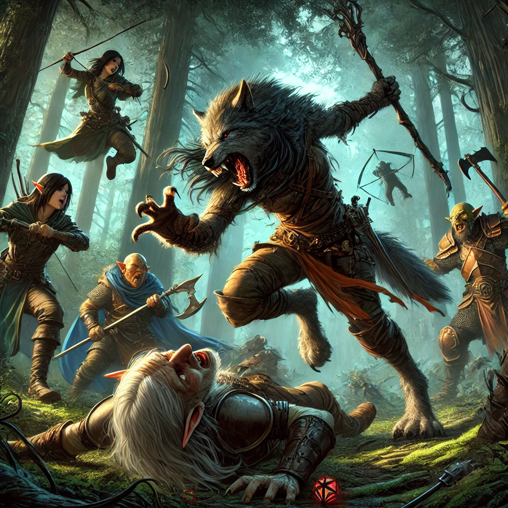
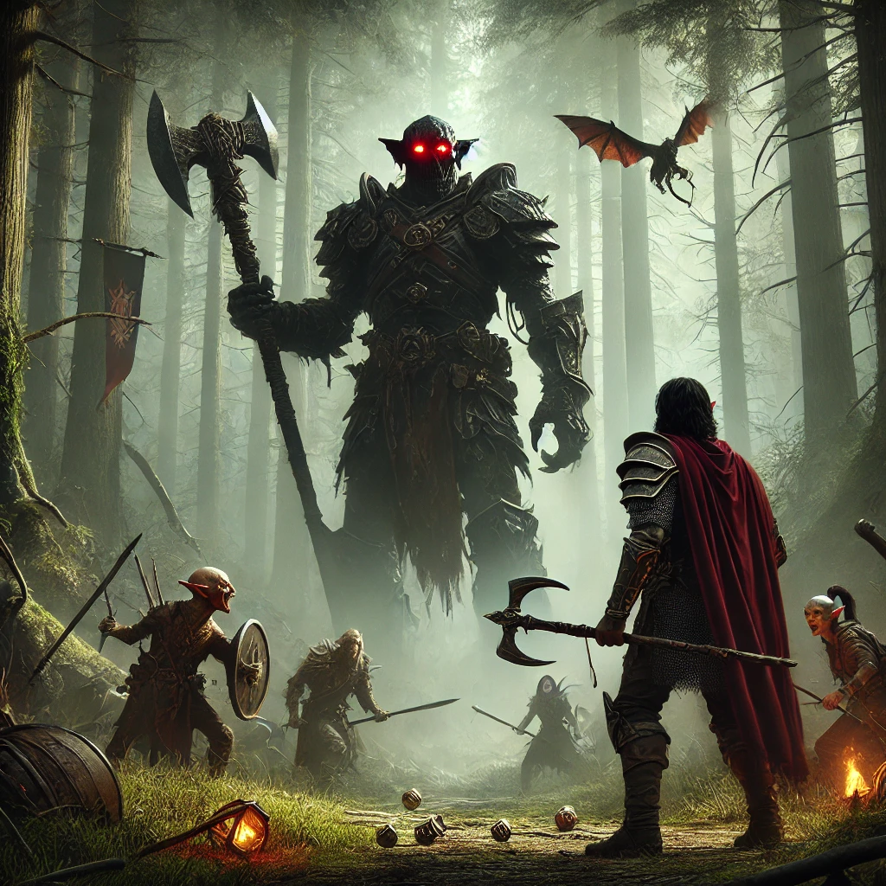
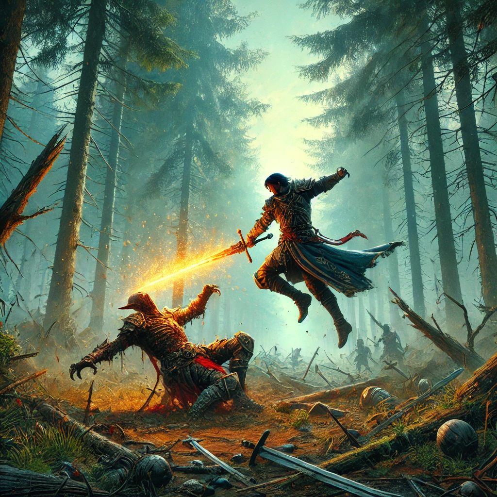

Talking to our guild's goblin quest giver, we received a quest to protect a caravan traveling into town. Our party included Renee, a Rougarou Commander with the ability to transform into a wolf. Her prowess would prove vital in the upcoming battles.
Moving toward the caravan's route, a scouting team moved ahead to check for threats. Soon, we encountered a pack of hobgoblins lying in wait. Half of the hobgoblins reacted to the caravan's arrival, while the rest remained in position. This was our chance to strike.
The battle erupted as we ambushed the remaining hobgoblins. Renee, in her half-wolf form, sliced one hobgoblin warrior clean in half. The Laughing Magus unleashed a dimensional assault, clashing with the hobgoblin warriors and their leader wielding a glaive. The clash was fierce.
The Hobgoblin General unleashed Fear on the Laughing Magus, but he retaliated with a fiery Spell Strike, igniting his sword and critically wounding a hobgoblin. However, the general was an imposing figure, standing tall and commanding his forces with ruthless efficiency.
As the battle drew to a close, the Magus delivered the final, decisive strike to the last hobgoblin, his flaming sword piercing through shattered armor. The forest fell silent as the fight ended, leaving only the aftermath of their victory.
With the threat eliminated, the caravan arrived safely in town at sunset. The villagers welcomed the adventurers as heroes, and the warm glow of the town's lights signaled the end of a hard-fought journey.